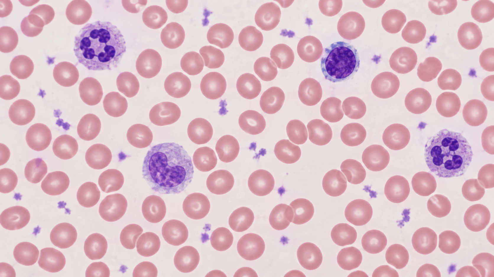
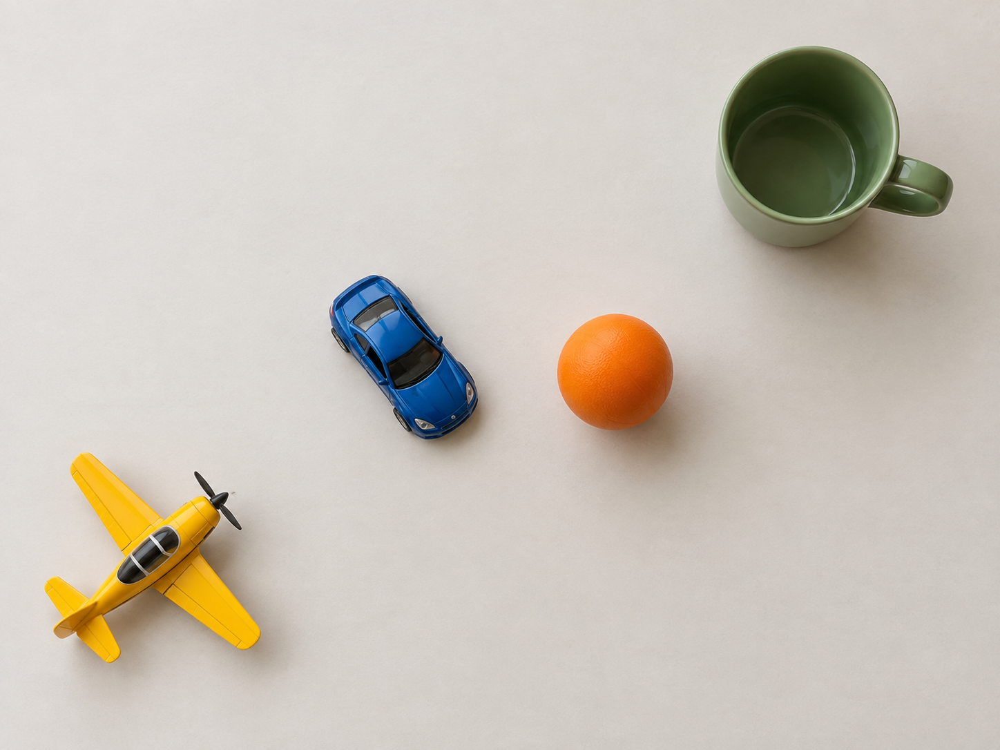

Imagem de fundo: OpenAI, imagem gerada por IA (2026)
Pergunta central: como uma CNN produz várias respostas espaciais em uma única passagem?
Da separação de regiões por cor até redes que localizam muitos objetos em tempo real.
| Tarefa | Pergunta | Saída |
|---|---|---|
| Classificação | O que aparece? | Uma classe por imagem |
| Detecção | Quais objetos e onde? | Caixas, classes e confiança |
| Segmentação semântica | Qual classe ocupa cada pixel? | Um mapa de classes |
| Segmentação de instâncias | Qual pixel pertence a cada objeto? | Uma máscara por instância |
Localização transforma reconhecimento em decisão.

Fonte: OpenAI, imagem sintética gerada por IA (2026)
semente e pixels aceitos por similaridade
Sensível à semente, ao limiar e ao ruído.
Algoritmos como K-Means agrupam pixels por atributos:
O grupo encontra regiões parecidas, mas não conhece o conceito “carro”.
A mesma região da imagem passa pela CNN várias vezes.
YOLO troca essa busca repetitiva por uma única predição estruturada.
You Only Look Once: uma rede recebe a imagem inteira e prevê localizações e classes em uma única avaliação.
Fonte conceitual: Redmon et al., YOLO (CVPR 2016)

Fonte: OpenAI, imagem gerada por IA (2026)
Quatro objetos, quatro classes e posições diferentes.
Imagem: OpenAI (2026); grid: elaboração própria
Cada célula ocupa uma posição fixa no tensor de saída.
Imagem: OpenAI (2026); anotações: elaboração própria
A caixa pode atravessar células. A responsabilidade acompanha apenas o seu centro.
células do grid
caixas candidatas
classes da célula
YOLOv1: \( 7 \times 7 \times (2 \cdot 5 + 20) = 1470 \) saídas.
Fonte: Redmon et al., 2016, seção 2
n = (x, y, w, h, pobj)
As classes completam a saída da célula. No YOLOv1, as caixas da célula compartilham as probabilidades de classe.
Imagem: OpenAI (2026); rótulos aproximados: elaboração própria
classe, xcentro, ycentro, largura, altura
Imagem: OpenAI (2026); grid: elaboração própria
Para S = 3, coluna c = 1 e linha r = 1:
\[x_{local}=3x-c\]
\[y_{local}=3y-r\]
carro: (0,23; 0,44)
bola: (0,83; 0,53)
| Sistema | Carro | Bola | Diferença em x |
|---|---|---|---|
| Imagem inteira | 0,410 | 0,610 | 0,200 |
| Célula central | 0,230 | 0,830 | 0,600 |
A diferença local cresce por um fator S.
O modelo usa melhor o intervalo entre 0 e 1 para aprender posições dentro da célula.
Imagem: OpenAI (2026); anotações: elaboração própria
Uma quantidade finita de previsões por posição limita quantos centros muito próximos o modelo consegue representar.
| Família | Posição x, y | Largura w, altura h |
|---|---|---|
| YOLOv1 | relativas à célula | normalizadas pela imagem |
| YOLO com âncoras | offset na célula | ajuste relativo à âncora |
| YOLO modernos | predições em mapas de vários strides | decodificação depende da cabeça |
A ideia permanece: prever valores em uma escala estável. A fórmula exata depende da versão.
Fonte: Redmon et al. (2016) e documentação Ultralytics YOLO11
Uma CNN por célula
Uma passagem pela imagem
O grid afeta o formato dos alvos e das saídas, não o recorte da entrada.
alta resolução
objetos pequenos
resolução média
objetos médios
baixa resolução
objetos grandes
YOLO modernos fazem previsões em mais de um mapa de atributos.
pontuação da classe ≈ confiança no objeto × probabilidade da classe
\[IoU=\frac{A \cap B}{A \cup B}\]
A caixa localiza aproximadamente. A máscara descreve a forma ocupada por cada objeto.
todos os carros usam a mesma classe de pixels
cada carro recebe uma máscara própria
Fonte: documentação Ultralytics, tarefa Segment
Uma linha por instância:
classe seguida pelos pontos (x,y) normalizados do polígono.
Formato: documentação Ultralytics para datasets de segmentação
Vamos comparar detecção e segmentação na mesma imagem usando modelos pré-treinados.
Caderno do repositório: cadernos/YOLO11 Tutorial.ipynb
API e modelos: Ultralytics YOLO11
Objetivo: relacionar a anotação manual com a saída do modelo.
x_c, y_c, w, h normalizadosx_local, y_localPróxima etapa: treinar o YOLO com um conjunto de dados próprio